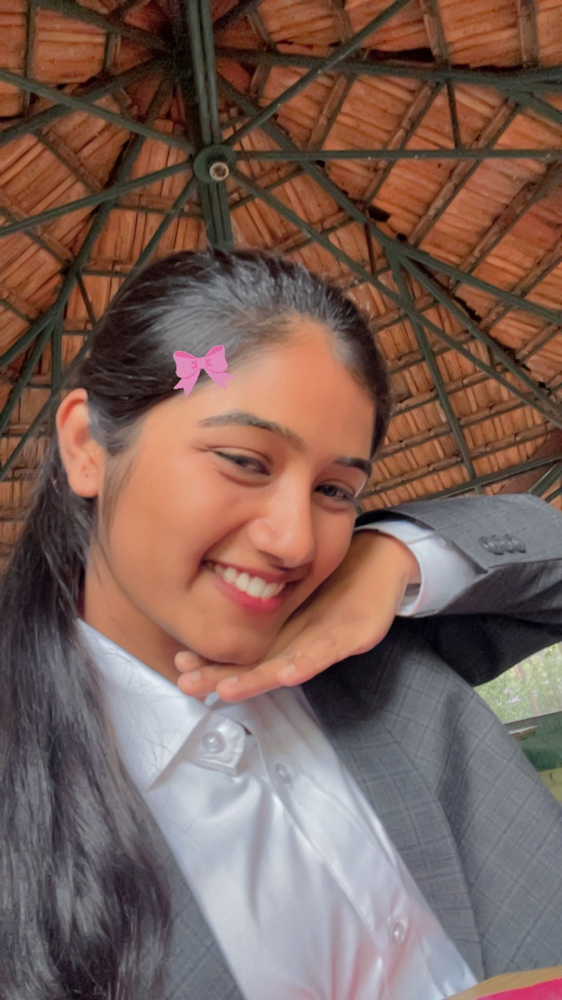

There are people we meet... and then there are people who slowly become a part of us.

Thank you for being one of the reasons behind this smile.
Three years ago, I never knew that Teresian would give me something so valuable.
You.
Thank you for being there during the moments I was difficult to understand. Thank you for staying even when I was wrong. Thank you for making me laugh when I wanted to overthink everything. Thank you for never making me feel judged.
Some friendships happen naturally. But the rare ones become a safe place. You have been that safe place for me.
Whenever life gets overwhelming, thinking about you somehow brings a smile to my face. That kind of comfort is rare. That kind of friendship is rare.
Thank you for being one of my favorite chapters.
Grateful.
Love.
Forever.
With love,
Gunaaaa 🤍
Some people become memories.
Some become home.
You became both.